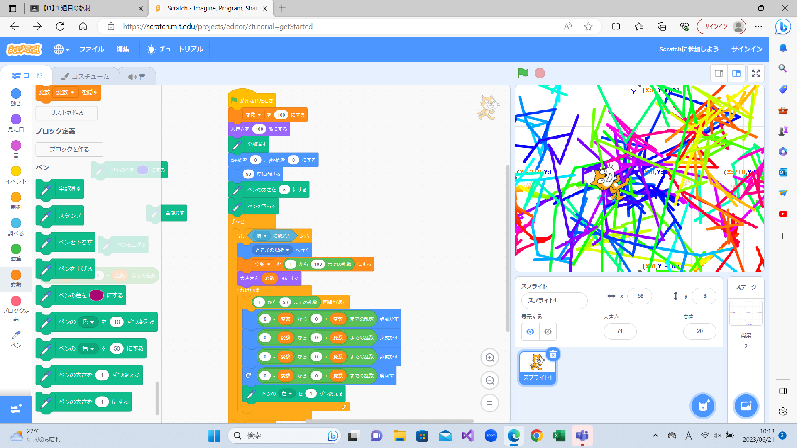
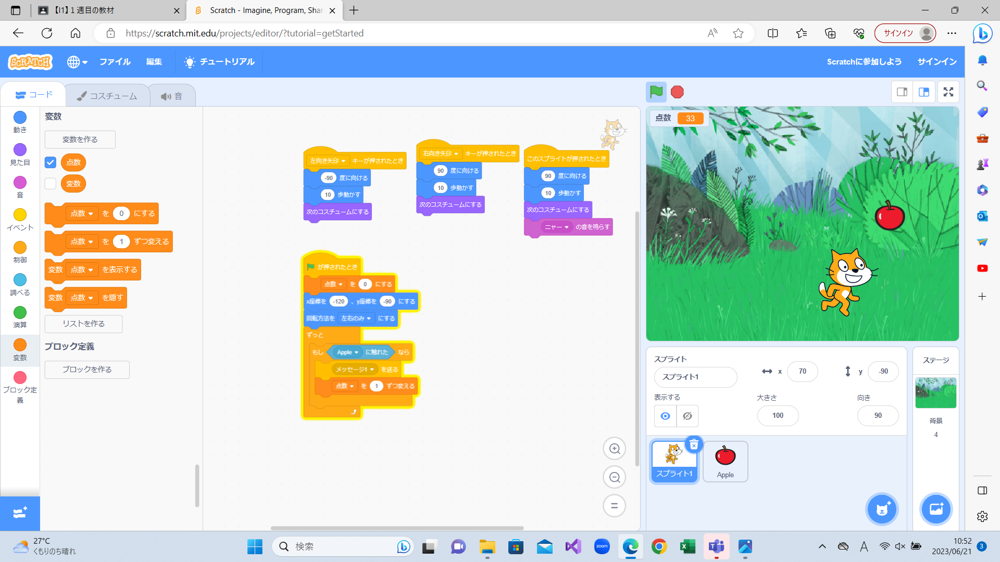

1週目のレポート ： 公大高専１年実習I-1
2a班16番 sh00915
第1週目
1-1 サイエンスアート

1.内容
スクラッチを使って猫が線を書くようにするプログラムを作った。
2.感想
不規則な線を描くように移動距離に乱数を入れるプログラムした。猫の大きさに合わせてペンの太さと移動する乱数の範囲も変わるようにした。 また、壁に当たると猫の位置と大きさが変わるようにした。自分が好きなようにプログラムできて楽しかった。猫の大きさに合わせてペンの太さと移動距離が変わるようにしたのがよかったと思う。
1-2 ゲーム

1.内容
落ちてくるリンゴをキャッチしたら点数が増える内容のゲームのプログラミングを作った。
2.感想
矢印キーで左右に動くようにした。リンゴが猫に触れると透明になり点数が増えるようになっていて、次に来るリンゴの速度も変わる。当たっても消えないリンゴをつくり本物のリンゴがわからないようにしたりして楽しかった。
1-3 ホームページ作成
私のホームページ
1.内容
ホームページを作る練習をするために作った。
2.感想
あまり手をつけてなくて、特に感想もない。